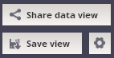

You can create your own data views via modifying predefined visualizations.
A panel for sharing, saving and managing of data views is located in the upper right corner of the application.

Each data view is represented by a unique URL link. These functionalities are available only for logged-in users.